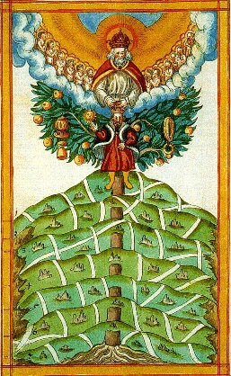
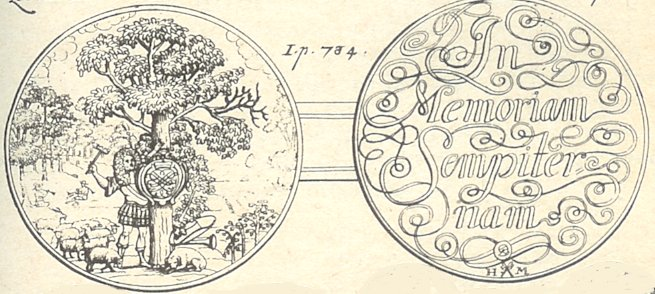
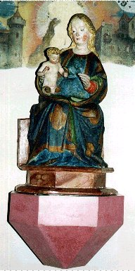

Emblema XXVI.
revu le 8 mai 2002
Sapientiae humanae fructus Lignum vitae est.
( Le fruit de la sagesse humaine est l’arbre de vie1.)
Il n’est chez les humains de sagesse plus grande
Que celle qui produit et richesse et santé.
En sa main droite sont de longs jours de vie saine
Et la gauche contient des monceaux de trésors.
Si quelqu’un, par l’esprit et le bras, sait l’atteindre,
Elle sera pour lui fruit de l’arbre de vie2.
Cicéron a décrit de façon admirable dans les termes suivants la différence essentielle qui distingue l’homme des autres espèces animales :
" L’homme est né pour raisonner comme l’oiseau pour voler et le cheval pour courir. "
En effet les lions, les ours, les tigres s’exercent et se mettent en valeur par leur férocité, les éléphants et les taureaux par leur vigueur, les aigles, les faucons et les éperviers par la chasse qu’ils livrent aux oiseaux et par l’agilité de leurs ailes3. Mais l’homme les surpasse, et il surpasse tous les autres animaux par sa raison, par les démarches de son esprit et de son intelligence. Aussi il n’existe pas chez les bêtes de férocité, de robustesse, d’agilité ou d’autre propriété qui ne puisse être adoucie, domptée ou devancée grâce à la raison. La raison n’est pas en effet quelque chose d’humain, née de l’humus, mais, comme dit le poète, une parcelle du souffle divin, envoyée du ciel dans un corps humain4. On l’appelle tantôt mémoire, tantôt faculté intellectuelle ; si l’usage ou l’expérience s’y ajoutent, la Sagesse, qui est le bien le plus précieux de l’homme, prend naissance. L’usage est dit le père et la raison ou mémoire, la mère d’un si noble enfant, d’où ce dicton populaire :
" L’usage m’a engendré, mais j’ai été enfanté par la mémoire, ma mère 5".
Mais quelle est donc la sagesse véritable et la plus digne d’être recherchée par l’homme, étant donné qu’il existe à ce sujet une infinité d’opinions et que chacun la rapporte à ses propres imaginations ? Il faut répondre que la Sagesse, les choses divines qui concernent le salut de l’âme étant toujours exceptées, n’est pas faite, dans le domaine des choses humaines, des arguties des sophistes, des propos oratoires et fleuris, de la sonorité poétique des vers, des subtilités critiques des grammairiens, qu’elle ne réside pas indifféremment dans le bien et dans le mal, dans les ruses et les parjures, les tromperies et les mensonges, la dureté de cœur et la sueur des pauvres, l’habileté à entasser l’argent et les biens, mais qu’elle n’est rien d’autre que la connaissance vraie de la Chymie jointe à la pratique, laquelle est la chose la plus utile au genre humain6.
Telle est la Sagesse qui domine toutes choses, qui pénètre à droite jusqu’à l’Orient, à gauche jusqu’à l’Occident, et embrasse la terre entière7. Salomon, au Livre de la Sagesse, parle d’elle de façon spéciale :
" Ceux qui sont ses proches demeurent éternellement, et ceux qui sont ses amis possèdent la volupté véritable, et celui qui la recherchera avec diligence se rendra maître d’une grande joie. Car il n’y a aucun dégoût à vivre avec la Sagesse ; il n’y a pas de lassitude à se trouver avec elle, mais de l’allégresse et de la joie. Quel que soit le plaisir que la musique et le vin mettent au cœur de l’homme, la Sagesse est plus agréable encore. Car elle est un arbre de vie pour tous ceux qui la saisissent et ceux qui la gardent sont bienheureux.8 "
Lactance l’appelle aliment de l’âme9.
" Les sages seront en honneur ; qui tiendra la Sagesse pour précieuse sera exalté et honoré par elle. Car la Sagesse élève ses fils, et qui adhère solidement à elle aura l’honneur en jouissance. De plus on acquiert par elle un nom immortel auprès de la postérité. Elle est plus puissante que toutes choses ; elle fortifie le sage plus que dix puissants qui sont dans la cité."
On peut aussi appliquer à cette sagesse universelle ce que dit le prophète Baruch :
" Apprends donc la vraie sagesse, apprends à connaître celle qui donne une vie longue, les richesses, la joie et la paix. [...] Et il est affirmé au Livre de la Sagesse que la Sagesse est une habileté secrète à pénétrer dans la connaissance de Dieu (arcanum consilium in cognitione Dei). La sagesse procure toutes choses et des richesses infinies sortent du travail de ses mains. Plus encore : tous les biens procèdent d’elle ; les grandes richesses et les biens sont entre ses mains et celui qui s’unit à elle est élevé par elle avec honneur. "
Et Sirach :
" Dans les trésors de la Sagesse sont l’intelligence et la piété de la science. "
Et ailleurs, il l’appelle enseignement de la prudence ou science de l’intelligence. Le philosophe Morien10 dit d’elle :
" Car cette Science est celle qui retire son maître de la misère de ce monde et le ramène à la science des biens futurs."
Qu’elle soit un don de Dieu, il l’atteste par les mots suivants :
" Dieu accorde en effet cette pure et divine science à ses fidèles et à ses serviteurs, c’est-à-dire à ceux à qui il a décidé, dès l’origine de la nature, de l’attribuer dans son admirable force. [...] Car cette chose n’a de pouvoir que comme Don du Dieu très-haut qui la remet et la montre selon qu’il le veut et aussi à qui il veut d’entre ses serviteurs et ses fidèles. Il convient donc qu’ils soient en toutes choses humbles et soumis au Dieu tout-puissant. "
Et plus loin :
" Il faut que tu saches, ô roi, que ce magistère n’est rien d’autre qu’une chose cachée, le secret des secrets du grand Dieu très-haut. Il a confié ce secret à ses prophètes, c’est-à-dire à ceux dont il a placé l’âme dans son paradis. "
Elle est dite arbre de vie, non qu’elle porte en elle le salut éternel mais parce qu’elle montre en quelque sorte le chemin qui y conduit, qu’elle porte des fruits utiles pour cette vie, fruits qui ne peuvent lui faire défaut, tels que la santé, les biens de la fortune et de l’âme11. Sans eux en effet l’homme, même encore vivant, est mort ; il ne diffère guère d’une brute, quand bien même il représente, dans sa partie extérieure, celui qu’il devrait être dans sa partie supérieure et qu’il n’est pas.
Notes1. l'arbre de vie. On en distingue de deux sortes : l'arbre solaire et l'arbre lunaire. Cet arbre a été évoqué dans la section Fontenay. L'arbre solaire est celui qui porte le Soufre rouge, symbolisé par sept fruits. L'arbre lunaire est celui qui procure le Soufre blanc. Pernety écrit, sur l'arbre de vie :
Nom que les Philosophes Hermétiques ont donné quelquefois à leur mercure ; mais plus communément à leur élixir, parce qu’il est alors la médecine des trois règnes, ou leur panacée universelle ; qu’il ressuscite les morts, c’est-à-dire les métaux imparfaits, qu’il élève à la perfection de l ’argent, s’il est au blanc, et à celle de l’or, s’il est au rouge. Ils l’ont aussi appelé Bois de vie. [Dictionnaire]2. cette déesse couronnée nous présente deux phylactères. Ce mot a un sens caché qui est le suivant. Un phylactère, en latin, phylacterium [amulette, préservatif] est également le nom donné à la plante artemisia [employée comme préservatif -mais pas au sens, bien sûr, où on l'entend de nos jours...il s'agissait d'une « préservation du mal » par les pouvoirs que l'on attribuait -faussement bien sûr- à cette plante]. Cette allusion à Artémis permet de comprendre l’allusion au mythe de Diane en Tauride (Artémis) dont nous rappelons qu’elle porte un flambeau et que son front est surmonté d’un croissant de Lune. En grec, julakthroV, est le lieu pour garder, le corps de garde à proprement parler. Si nous en faisons le garde du corps, ainsi que nous y autorise la cabale, nous ne serons pas loin d'avoir trouvé le sens réel de ce pouvoir de préservation qu'exerce le phylactère.
FIGURE I
(Martin Sturtz, De Humido Radicali, 1597, Ms. K II 8, 69r, UB Basel : l'arbre de vie)
3. trois qualités sont évoquées successivement : par la voracité, c'est l'aspect du premier Mercure [lion, tigre] ; par la vigueur, c'est aussi la constance et la Force [éléphant, taureau]. Enfin, l'aspect volatil est évident [aigle, faucon, épervier] avec cette caractéristique que ces oiseaux ont des yeux de lynx [ou de Lyncée, principe fixe] et qu'ils peuvent, selon la légende, contempler fixement le soleil.
4. Il s'agit là d'une allégorie sur l'Esprit [Mercure] et l'Âme [Soufre].
5. cette sagesse a des rapports avec le caractère permanent de l'eau mercurielle, où une certaine constance, une stabilité dans le temps, sont des éléments indispensables à la genèse de la Pierre. La mémoire a rarement été utilisée comme allégorie ; on se souviendra toutefois du médailler saxon rédigé par Tentzel dont Bernard Husson dit ceci :" La première médaille de la 70e planche...est une énigme...Elle représente à l'avers le Duc vêtu à la romaine, clouant sur un chêne, au milieu d'une forêt, un bouclier portant ses initiales. Au revers on lit, en lettres calligraphiées, En mémoire perpétuelle." [Transmutations alchimiques, J'ai Lu, 1974].

FIGURE II
(médaille alchimique de Tentzel)Cette mémoire, là encore, se rapporte au caractère particulier de l'eau mercurielle que nous avons évoqué. Mais c'est la première fois que nous rencontrons l'usage que Maier attribue au principe mâle et la mémoire, attribuée au principe féminin. Si, pour la mémoire, la correspondance avec l'esprit ne pose pas de problème, il en va autrement pour l'usage. En grec, on trouve que sunhqeia [usage] est proche de sunhqew, qui signifie filtrer ensemble. Mais cette piste semble bien douteuse, et fragile.
6. Ce morceau de rhétorique est truffé de cabale. Nous laisserons à l'étudiant le soin d'y trouver les traits les plus typiques ; rien, de toute façon, n'est nouveau ici. Il s'agit toujours de l'éternel problème du salut de l'Âme et de son incarnation.
7. A l'Orient, le Soleil et Sirius se lèvent ; de même Vénus qui s'appelle alors Lucifer. La Lune est à son dernier quartier, ce qui est le signe du Soufre blanc. A l'Occident, la Lune est à son premier quartier et symbolise le Mercure. Vénus se couche et se nomme alors Hesper. La combinaison d'Hesper et de la Lune montante forme le Mercure philosophique. La combinaison de la Lune descendante et de Lucifer donne un symbole qui s'apparente d'assez près à l'hiéroglyphe de Neptune et de son trident, c'est-à-dire de Vulcain ardent.
8. Manière de dire que la sagesse gouverne le temps dans la Grande Coction, l'opération du 3ème oeuvre. On consultera ici les Gardes du Corps, en ayant à l'esprit la Tempérance et la Prudence.
9. Lactance est cité par l'assonance avec le lait, qui est blanc. L'aliment de l'Âme est l'Esprit, c'est-à-dire le Mercure, qui en constitue le véhicule. Il est congénère du Lait de Vierge [cf. Artéphius].
FIGURE III
(Vierge de Porrentruy, Suisse - cliché alain Mauranne)Sur la figure III, observez les couleurs du manteau de la Vierge, qui ne sont pas sans présenter de rapport avec le vitriol des Sages ; par incidence, voyez comment le pied-douche est taillé en cabochon.
10. sur Morien, voir en recherche [plus de 40 occurrences].
11. Ce sont les fruits du Jardin des Hespérides dont nous avons parlé dans la section Matière. Ces fruits sont issus d'un travail lent du Mercure ; de deux sources qui affectent un faciès léonin ; ces fruits sont ceux de l'Arbre solaire et le signe qui leur convient le mieux est connu dans les traités sous les traits de la grenade.